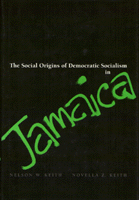

Challenging current interpretations of Jamaican events and politics
Challenging current interpretations of Jamaican events and politics


 Challenging current interpretations of Jamaican events and politics
Challenging current interpretations of Jamaican events and politics

|  |
The Social Origins of Democratic Socialism in JamaicaNelson W. Keith and Novella Z. Keithcloth EAN: 978-0-87722-906-3 (ISBN: 0-87722-906-6) |
"This book is...tightly organized and coherent, rich in historical analysis."
—Jay R. Mandle, Colgate University
In 1974, following a successful parliamentary election, Michael Manley and his People's National Party took Jamaica onto a self-proclaimed democratic socialist path. Although the project failed even prior to the subsequent electoral defeat of the PNP in 1980, this short-lived experiment has evoked considerable interest among development scholars. In this book, Nelson Keith and Novella Keith challenge current interpretations of Jamaican events and develop an alternative theoretical model: national popularism.
Without dismissing the negative machinations by the U.S., internal mismanagement, and other problems, the authors argue that the events in question speak of the fragility of a national class alliance that coalesced temporarily, amidst a crisis, around a "new" politics. While incorporating radical impulses "from below" as well as socialist policies, the new politics was rooted in liberal democratic strains that had evolved historically in ways that could accommodate these impulses. The Manley project can thus be better understood as the "management" of peripheral capitalism rather than a budding socialism. In their rich historical analysis of race and class in Jamaica, the authors trace the emergence and demise of progressive "alternative paths to development" in the Third World.
"This book is at once well researched and documented, refreshingly analytical (as opposed to merely descriptive), and enlightening. It offers a new interpretation of the events of the 1970s in Jamaica and provokes some profound theoretical questions particularly in light of the demise of international communism and its ideological underpinnings."
—Aggrey Brown, Ph.D., Director, Caribbean Institute of Mass Communication, University of the West Indies
List of Tables and Figures
Abbreviations
Preface
Introduction
Part I: Jamaica in Crisis
1. The Setting
2. Democratic Socialism versus National Popularism
Part II: The PNP and Radicalism
3. Impulses for Change: The Push from Below
4. The Politics of the PNP: The Emergence of a Rational Practice
Part III: The Progressive Accumulation of Capital
5. The Capitalists
6. The Strategic Middle Class
7. The Subordinate Classes
8. The Rise of a New Politics
Part IV: Charting National Popularism
9. National Popularism and the State
10. Safeguarding Class Alliances: Resource Distribution under National Popularism
11. State-Directed Change: Some Questions
Notes
Bibliography
Index
Nelson W. Keith is Professor of Sociology and Director of the Institute for International Development at West Chester University.
Novella Z. Keith is Research Professor, Institute for International Development at West Chester University.
Political Science and Public Policy
© 2015 Temple University. All Rights Reserved. This page: http://www.temple.edu/tempress/titles/821_reg.html.